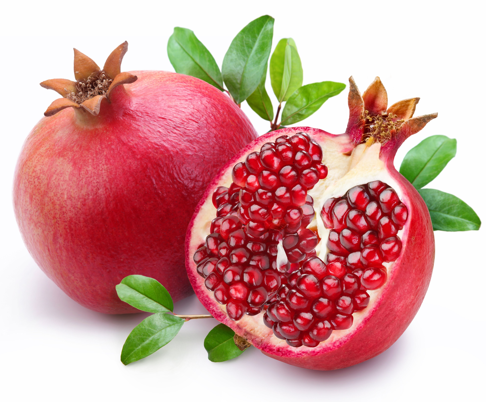

Krushi Vibhag (Agriculture) - Nimgoan Ketki
Guidance, schemes, soil testing info, crop protection and farmer support
Guidance, schemes, soil testing info, crop protection and farmer support

Krushi Vibhag helps farmers with crop guidance, soil health information, seed/fertilizer advice, pest control guidance and access to government schemes.
Use these official portals for schemes, application status, insurance and soil health services.

Map below shows a helpful nearby search location. If you share the exact Google Maps link of your Krushi Seva Kendra, I will set the exact pinned location.
Visit Krushi Seva Kendra / Taluka Agriculture Office with crop photos and details. They guide on medicine dose and precautions.
Open the 'PM-KISAN Status' link above and check using Aadhaar/registration details.
It helps understand soil nutrients and recommends the right fertilizer, improving yield and reducing extra cost.
Usually through MahaDBT Farmer Portal and office guidance. Carry Aadhaar, bank passbook, 7/12 and mobile number.